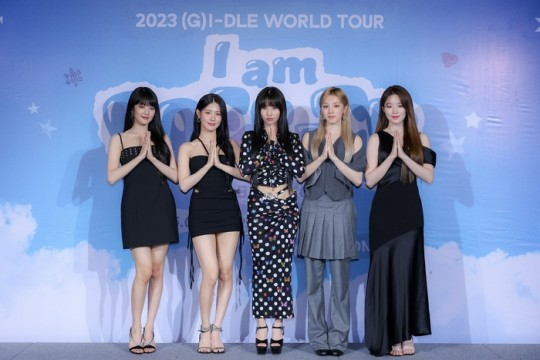

(여자)아이들, 태국 공연 전 기자회견 ‘압도적 열기’

그룹 (여자)아이들이 태국 현지 언론의 뜨거운 관심 속에 기자회견을 가졌다.
(여자)아이들은 지난 14일(현지시간) 태국 방콕에서
‘2023 여자아이들 월드 투어 아이 엠 프리티 인 방콕((G)I-DLE WORLD TOUR [I am FREE-TY] IN BANGKOK’ 공연을
하루 앞두고 기자회견을 진행했다. 이날 기자회견에는 태국 지상파 방송사 ‘Workpoint TV’(워크포인트 TV)‘와
’Thairath‘(타이랏), ’Daily News‘(데일리 뉴스) 등 48개 매체가 참석하는 등 뜨거운 취재 열기가 이어졌다.
인터뷰에서 (여자)아이들 멤버들은 월드 투어를 통해 태국을 재방문하게 된 소감, 콘서트 무대 스포일러와 주목 포인트 등을 전했다.
또 두 번째 월드 투어를 기다려 준 태국 네버랜드를 향해 특별한 공연을 예고해 기대감을 끌어 올렸다.앞서 (여자)아이들은 한국과
대만 공연을 통해 타이틀곡과 수록곡 무대, 솔로 무대 등 다채로운 구성과 화려한 퍼포먼스로 팬들의 마음을 사로잡았다.
방콕 썬더돔에서 펼치는 공연에 이어 아시아, 미주, 유럽 지역을 방문하며 열기를 이어간다.